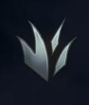
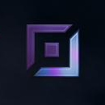
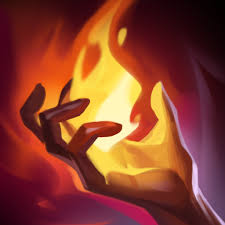
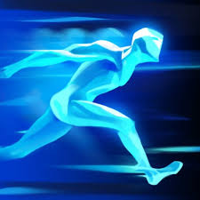

ーー前提ーー
リーグオブレジェンド（LoL）は、マルチオンラインバトルアリーナ（MOBA）と呼ばれるジャンルのゲームです。 2025年現在、15年間もアップデートを続けていて、約2週間に1回の頻度で環境が変化するのが特徴です。
LoLの楽しさは、170体以上の個性豊かなキャラクターと、最低5つのスキル、100を超えるアイテム、その組み合わせによる無限の戦術にあります。同じ試合は一つとしてなく、プレイヤースキルと戦略のバランスが勝利のカギを握ります。
各キャラクターにはストーリー、バックグラウンド、他のキャラとの関係があります。
ーールールーー
LoLの舞台は「サモナーズリフト」です。 相手チームの「ネクサス」と呼ばれる拠点を破壊すると勝ち、逆に自分たちのネクサスが破壊されると負けとなります。
ネクサスを破壊するには、レーン上にあるタワー×3、インヒビター、そしてまたタワーを破壊したうえでネクサスまで到達します。
ネクサスを壊したい、タワーを折りたい→ミニオンをタワーに押したい→相手をどかしたい→相手より強くなりたい。
必要な物３個
金・経験・バフ
お金→LoLで買い物をする。アイテムはあほらしいぐらい強い
タワーを折る、敵を倒す、ミニオンにとどめを刺す(CS)。ずーーっとミニオンで稼ぐ、経験値も手に入る！
バフとは、エピックモンスターと呼ばれる物
ドラゴン、アタカン、ヘラルド...
ロール（役割）
各プレイヤーには試合での役割が与えられます。これを「ロール」と呼びます。
タイマンをはる、一人で試合を破壊することもできる、チームを守るタンクになることも
緊張感があって駆け引きが出来る、チームの最前線。PS重視
最も難しく、ミニオンを倒さずに森の中にいる、すべてのレーンに関与し1v2を作る。誰かを助ける、誰かを捨てるを選ぶ必要があり謝らないメンタルが大切
全てのレーン、キャラクターの知識が必要。自分の力でゲームが決まる、JGGAP。マクロ重視
花形レーン 影響力が高い、メイジ、アサシン、居酒屋までいろいろなチャンピョンがいる。
理不尽を押し付け、理不尽を押し付けられる。ミクロマクロどちらも重要
最もDPSがでる火力担当、銃とか弓とか、遠距離で戦う。
火力に全ぶりなのでよわっちい、ゆえに狙われる、PS重視
唯一お金を稼がない、お金は全部ADCに無償の愛を味方に、ずっとADCの横にいる。
ヒール、行動妨害、バリア、SUPがADCを育てるママ、他のレーンも助ける。マクロ重視
これを覚えれば試合は"出来る"
まずは以下の流れを覚えましょう！
1. チャンピオン選択: チャンピオンをバン（使用禁止）し、ピック（選択）します。ルーンは「おすすめ」を参考に選び、ジャングルはスマイトというサモナースペルを必ず設定しましょう。

2. 序盤の買い物: TOP、MID、ADCはショップでアイテムを買います。JGは「コンパニオン」、SUPは「ワールドアトラス」を購入します。
3. スキルの習得: 経験値を獲得してレベルを上げるとスキルを強化できます。レベル6、11、18でアルティメットスキル（R）が強化できます。
4. 最初の目標: 3キル、タワー破壊、エピックモンスターを3体倒すのいずれか2つを達成すると「力の偉業」という永続バフを得られます。これが勝率7割を超えると言われる重要な目標です。
オンラインをやる上で欲しい知識
試合では、次のような会話が交わされています。
TOP「チョガスNOTP,TOPTP差あるから相手プッシュする前に3ドラタッチしたい。」
ADC「了解、なら俺このウェーブクリアしたらIE生えるから一旦リコールして赤バフ拾いたい、先に視界取ってキャッチしよう」
JG「相手AP濃いからMR積みたい、MIDが阻害買ってくれたら助かる、TOP寄れるなら先頭にSUPとワード置きに行こう、俺ピンクワードあるし、ドラピットに置きたい」
MID「相手ゾニャあるから気を付けて欲しい、R後ろに打つからJGはadc見といて」
SUP「mid 25:00 adc 24:55 noF」
LoLプレイヤーは意味わかります、マジで。
最初はすべてを理解するのは無理なので、以下の知識を少しずつ覚えていきましょう。
サモナースペル
チャンピオンのスキル（QWER）とは別に、プレイヤー自身が持つ特殊なスキルが「サモナースペル」です。
- フラッシュ: 300秒ごとに1回使える最強のスペル。壁を越えたり、逃げにも攻めにも使えます。
- テレポート: ミニオン、ユニット、ワード、タワーに移動できます。試合開始から14分後にはクールダウンが短縮されます。
- スマイト: ジャングル専用のスペルで、モンスターに600/900/1200の確定ダメージを与えます。
- イグナイト: 敵に継続ダメージと重症を与えます。
-  ゴースト: 一定時間移動速度が上昇し、ユニットをすり抜けられるようになります。
- バリア: 2.5秒間シールドを獲得します。
- ヒール: 自身と近くの味方を回復させ、少しだけ移動速度が上がります。
- イグゾースト: 2.5秒間、敵の移動速度を低下させ、与えるダメージも減少させます。
- クレンズ: サプレッションとノックアップ以外の行動妨害を解除します。
CC（行動妨害）
「クラウドコントロール」の略で、敵の行動を妨害するスキルの総称です。
体力バーの上に表示されます
CCの種類
- ノックアップ: 浮き上がって何もできなくなる、耐性も解除できない最強のCC
- スタン: 一定時間、敵の行動を完全に停止させます。
- スロウ: 足が遅くなる、2つ以上のス老がかかった場合は効果が高い方が適応。
- サイレンス: スキルとアイテムの使用を封じます。
- スネア: 敵の移動を封じますが、攻撃やスキルは使用できます。
- タウント: 敵に強制的に自分をAAさせます。
- チャーム: 敵がゆっくりと自分に近づいてくるようにします。
- フィアー（逃走）: 敵が自分から離れていくようにします。
- サプレッション: 一切の行動を封じる、解除不可能なCCです。
- 釘付け: 移動スキルが使えなくなります。
- 停止: 一定時間、対象の時間を止めます。
- ポリモーフ: 敵を弱い状態に変身させます。サイレンス、スロウ、通常攻撃不可の効果があります。
- ブラインド: 敵の通常攻撃を一定時間外れさせます。
- サスペンション: ノックアップに似ていますが、解除が可能な行動妨害です。
アイテム / ステータス
戦闘中に手に入れたゴールドを使って、様々なアイテムを購入できます。 素材となるアイテムを組み合わせて完成アイテムを作成します。アイテムは売却できますが、購入価格の7割のゴールドしか戻ってきません。
アイテムによって、チャンピオンの様々なステータスが上がります。
- AD（アタックダメージ）: AAや物理ダメージの量を増やすステータスです。
- AR（アーマー）: 物理ダメージを軽減します。
- AS（アタックスピード）: 通常攻撃の速度です。
- Ct（クリット）: クリティカル率です。
- AP（アビリティパワー）: 魔法ダメージの量を増やすステータスです。
- MR（マジックレジスト）: 魔法ダメージを軽減します。
- Sh（スキルヘイスト）: スキルのクールダウン時間を短縮します。
- MS（ムーブメントスピード）: 移動速度です。ブーツは必須アイテムです。
ルーン
試合開始前に設定する、チャンピオンの成長を決定するシステムです。 「キーストーン」と呼ばれるメインのルーンと、「サブルーン」「シャード」を組み合わせてカスタマイズします。 最初はOP.GGやU.GGやlolalyticsなどのサイトで、おすすめのビルドを参考にしましょう。
フェイが使えそうなルーン 彗星: スキルダメージを与えると敵に飛んでいく。
彗星: スキルダメージを与えると敵に飛んでいく。 魂の収穫: HPの低い敵にダメージを与えると追加ダメージ、収穫するたびにダメージが上がる。
魂の収穫: HPの低い敵にダメージを与えると追加ダメージ、収穫するたびにダメージが上がる。エピックモンスター
ドラゴン、ヘラルド、バロンなどの強力な中立モンスターです。 これらを倒すと、チーム全体に有利な「バフ」を得ることができます。
エピックモンスターの説明
- ドラゴン: 4体倒すと「ドラゴンソウル」という強力な永続バフを得られる。勝率が80%になると言われるほど強力。
- ヘラルド: 討伐するとアイテムをゲットできる、召喚するとタワーにタックルする、ヘラルドをクリックすると乗れる、気を付けて。
- バロン: 討伐するとミニオンを大幅に強化するバフを得られる。非常に強力なため、試合の終盤を動かす重要なオブジェクト。
攻撃、耐久、体力、MS、回復力、スキルヘイストなどのバフがある
最初の２体はランダム、３体目からはずっと固定
そして三体目の登場と同時にMAPが少し変わる
４体のドラゴンを倒すとドラゴンソウルというものがもらえる、超強化バフ80%勝てる
そのあと6分後からはずっとエルダードラゴン
効果はHP20%以下の敵に確定キルをする最強、勝ち、あほ
ヘラルドやバロン以外討伐に関与すると、リコールが速くなる
視界（ワード）
マップのほとんどは「霧」に覆われていて、視界（あなた/タワー/ミニオン/ワード）がないと敵やオブジェクトの位置を把握できません。
「ワード」を置くことで、見えない場所に視界を確保できます。
※これめちゃ重要
ワードの入れ物をトリンケットと言います。
- ステルスワード: 置くと2秒後に敵から見えなくなるワードで、3本まで設置可能です。
- コントロールワード: 75ゴールドで購入でき、周囲の敵ワードやトラップを無効化できます。一人1つしか持てませんが、敵に壊されるか置いてあるのに新しいコントロールワードを置かない限りずっとある。非常に重要です。
- オラクルレンズ: 使用すると周囲の隠されたワードや透明化しているトラップや透明な敵を見つけられます。
- ファーサイトオルタレーション: 9レべ以降に使えるワード、遠距離にさせる体力1のワード敵が視界に入ると壊れる
ミニオン / ウェーブ
ミニオンとは？
15CSで1キル分！！！！！
後衛14G キャノン60～90G 前衛21G
ミニオンが自分の前にいない、AA,対象指定スキルをするとミニオンに殴られます
方向指定と、ブッシュに入ると切れる（ワードがあると切れない）
CSのコツ
前衛タワー2発とAA、後衛タワー1発とAA
CSは落としちゃダメ、絶対にね！！！QOL下がります
（SUPやるときは触らない）
AAはとりあえずするのではなく、自分のミニオンが誰を殴っているか見てみよう！
次に死ぬミニオンを見つけてHPが低くなったら殴る、それ以外は関係ないキャラを殴る、移動してスキルをよける準備などしよう※CSを逃さないように
まずは50cs/10分を狙おう！
ウェーブとは？
ミニオンウェーブ、キャノンがいるときはキャノンウェーブといいます
最初のウェーブを除いて
～15:00までは3ウェーブに一回キャノンウェーブ
15:00～25:00は2ウェーブに一回キャノンウェーブ
25:00～は1ウェーブに一回キャノンウェーブ
ミニマップにウェーブ、ミニオンは映ります
常に敵と味方のミニオンは同じタイミングで沸き同じ速度で来る
ウェーブコントロールとは？
ウェーブは跳ね返ります
相手に押し付けるのがプルウェーブ、自分のタワーに引き付けるのがプッシュウェーブといいます
ミニオンの数は正義、数で勝てれば押すし、負けていれば押される
タワーがあったり、敵のミニオンが先に到着するので交互にミニオンの位置が変わる
が、プルウェーブをキープする（フリーズ）させると敵のミニオンが死ぬ
ミニオン3,4体をキープするといいよ、敵が来たら追い返す
（プッシュ状態だと自分が前に出る、つまり敵のガンクが刺さる、逆もしかり）
ウェーブを押して帰れば跳ね返ってレーンに帰ってくるころには自分のもとへ！
困ったらJGを呼んで一緒にウェーブを押す！
勝ってるならにウェーブを押して味方を助けに行く、ワードを刺しに行く、など時間の有効活用をしましょう
では動くためには時間が必要、より多くのミニオンを相手に押し付けるためにはビックウェーブを作ろう
大量のミニオンを集めるには？
一つのウェーブはゆっくりラストヒットだけとる、二個目のウェーブでスキル全開で一気に消す
1ウェーブ目の残ったミニオンと2ウェーブが合流すればビックウェーブに！
これがウェーブコントロール
タワー
タワーとは？
壊すとお金がもらえる
敵のネクサスに行くまでに
アウタータワー・インナータワー・インヒビタータワー・ネクサスタワーがある
そしてゴールドにはグローバルゴールドとローカルゴールドがある！
グローバルゴールドはどこにいてももらえる！
ローカルゴールドをもらうには壊れるときにタワーの近くにいる、壊れる前にタワーにAAする、とお金がもらえる
グローバルゴールド/ローカルゴールド
アウター50/250 インナー25/675 インヒビ25/375 ネクサス50/0 がもらえます
そして試合開始14:00まではアウタータワーにプレートが付いている
プレートはタワーを固くさせてる、プレートは削れば削るほど固くなっていく
一枚はがすと125ゴールドのローカルゴールドがもらえる。
インヒビターを破壊するとキャノンはスーパーミニオンになる
非常に強く勝手にプッシュしていく
全てのインヒビターを破壊すると全レーンに二体ずつになる、つまり6体が進軍...
インヒビターは5分で復活する
3っつのインヒビターを破壊できていれば勝率99%
コミュニケーション
チャット以外にも「ピン」を使って味方に情報を伝えられます。
デフォルトはGキーを押しながらドラッグすることで、様々なピンを出すことができます。
- ミアピン（？）: 敵を見失った時。
- GOピン（↓）: 「今から行くよ！」
- 救助ピン（旗）: 「助けて！」
- バックピン（△！）: 「引こう！」
- 危険ピン（〇-）: 「危ない！」
- 匿名ピン: ワードが見えた場所にさすと、味方に伝わります。
TABを押すと見れる情報
画面上の情報は
見方の青バフ・赤バフ・バロン・アタカン・ドラゴン・敵の赤バフ・青バフ
TABの情報は全部クリックでき、味方のチャットに流れるます
設定でタイムスタンプをオンにしていると何分何秒にしたのかが分かる
例：敵がフラッシュを使ったらTABで敵のフラッシュをクリック、味方に敵のフラッシュが無いことが伝わるので手助けしてくれるかも...？